Γενικές πληροφορίες
Ο Τζον Φράνσις Μποντζιόβι (John Francis Bongiovi Jr., 2 Μαρτίου 1962), γνωστός ως Τζον Μπον Τζόβι,
είναι Αμερικανός μουσικός, τραγουδιστής, στιχουργός, παραγωγός δίσκων, φιλάνθρωπος και ηθοποιός, πιο γνωστός ως ιδρυτής, τραγουδιστής και επικεφαλής του ροκ συγκροτήματος Bon Jovi,
το οποίο σχηματίστηκε το 1983.
Προσωπική ζωή
Γεννήθηκε στο Περθ Άμποϊ του Νιου Τζέρσει, και είναι γιος δύο πρώην πεζοναυτών, του κουρέα Τζον
Φράνσις Μποντζιόβι και της ανθοπώλισσας Κάρολ.Έχει δύο αδερφούς, τον Άντονι και τον Μάθιου.
Ο πατέρας του ήταν ιταλικής καταγωγής (από την Σιάκκα της Σικελίας) και γαλλικής καταγωγής
και η μητέρα του βρετανικής και ιρλανδικής καταγωγής.Ο ίδιος έχει δηλώσει ότι είναι συγγενής
εξ αίματος με τον τραγουδιστή Φρανκ Σινάτρα. Ο Μπον Τζόβι ανατράφηκε καθολικός.Πέρασε πολλά
καλοκαίρια στο Έρι της Πενσυλβάνια, με τους παππούδες του, και πουλούσε εφημερίδες. Ως παιδί,
ο Jon φοίτησε στο Γυμνάσιο St. Joseph High School στο Metuchen, Νιου Τζέρσεϊ, την πρώτη και δεύτερη τάξη. Αργότερα μεταφέρθηκε στο γυμνάσιο Sayreville War Memorial, του Νιου Τζέρσεϊ.
Δισκογραφική σταδιοδρομία
Δεκαετία του '80:
Η καριέρα του Τζον Μπον Τζόβι ξεκίνησε με τη δημιουργία του συγκροτήματος
Bon Jovi την δεκαετία του '80.Το ντεμπούτο τους άλμπουμ "Bon Jovi" (1984) περιλάμβανε επιτυχίες
όπως το "Runaway" και έθεσε τις βάσεις για τη μεγάλη τους επιτυχία.
Δεκαετία του '80 - Δεκαετία του '90:
άλμπουμ "Slippery When Wet" (1986) και "New Jersey" (1988) σημείωσαν τεράστια επιτυχία με επιτυχίες όπως
"Livin' on a Prayer," "Wanted Dead or Alive," και "Bad Medicine."
Από το 2000 μέχρι σήμερα:
Ο Τζον Μπον Τζόβι συνεχίζει να είναι δραστήριος και δημιουργικός. Τα άλμπουμ όπως το "Bounce" (2002),
"Lost Highway" (2007) και "This House Is Not for Sale" (2016) διατηρούν το ενδιαφέρον.
Βραβεία και υποψηφιότητες
Βραβεία Grammy:
-Το 2007, τιμήθηκε με το Grammy Award for Best Country Collaboration with Vocals.
Βραβεία American Music:
-Έχει κερδίσει αρκετά βραβεία American Music Awards στις κατηγορίες Favorite Pop/Rock Band, Duo, or Group, καθώς και Favorite Rock/Pop Album.
Βραβεία MTV Europe Music:
-Το 1995, αναδείχθηκε Best Male Artist.
Βραβεία Golden Globe:
-Το 2012, ήταν υποψήφιος για το Golden Globe Award για το τραγούδι "Masterpiece" από την ταινία "W.E."
Βραβεία Academy Award (Oscars):
-Το 2012, ήταν υποψήφιος για το Academy Award for Best Original Song για το τραγούδι "Blaze of Glory" από το "Young Guns II."
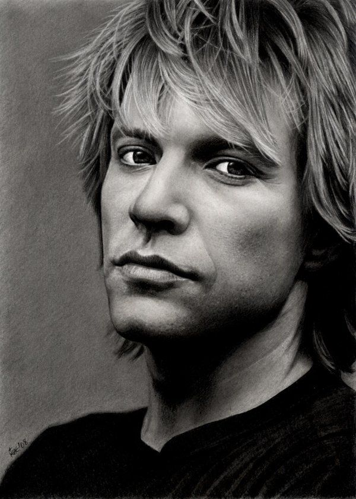 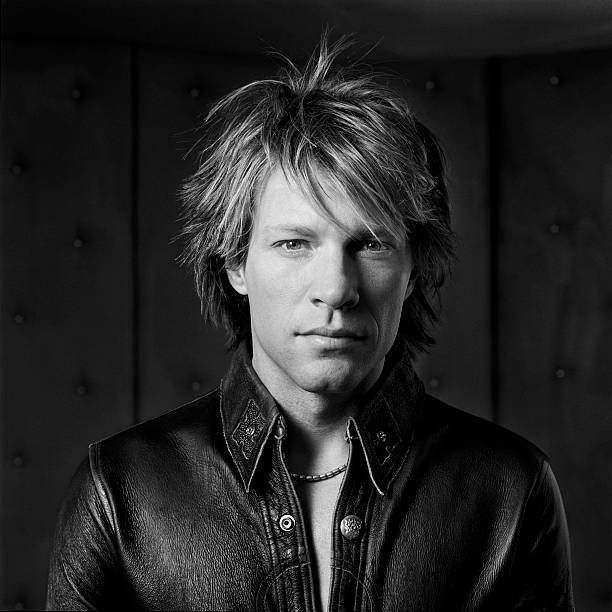 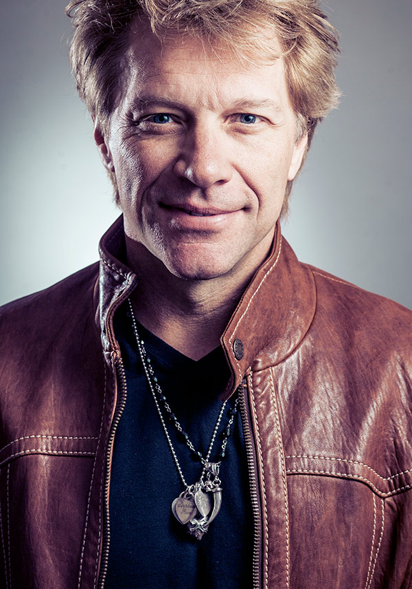 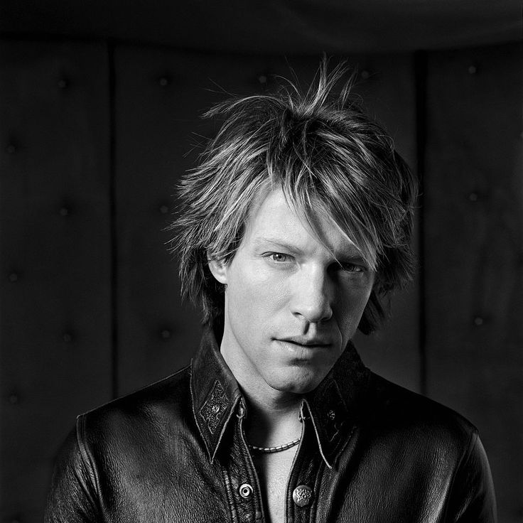
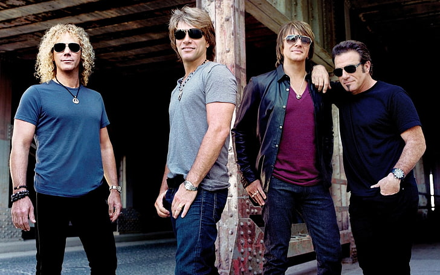
 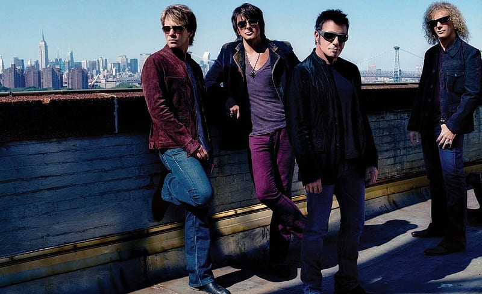
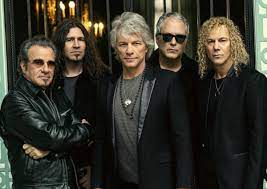
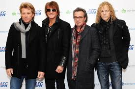
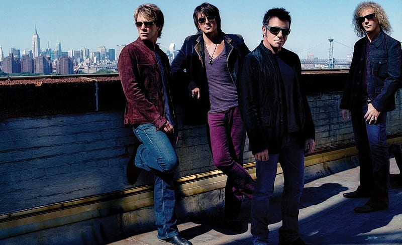
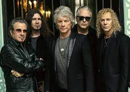
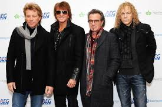
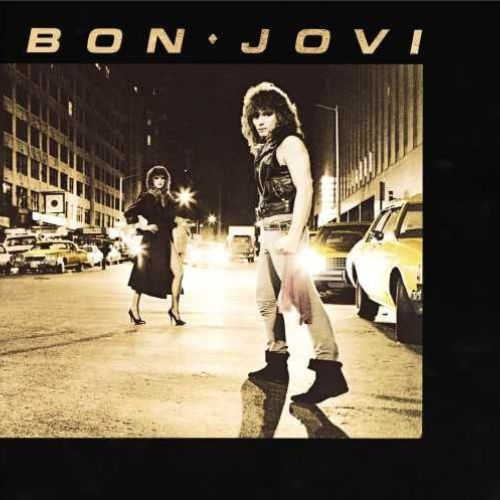 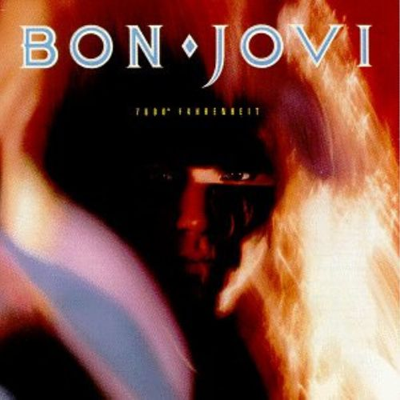 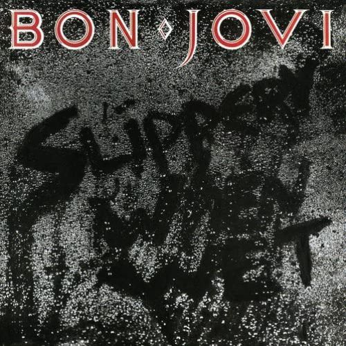 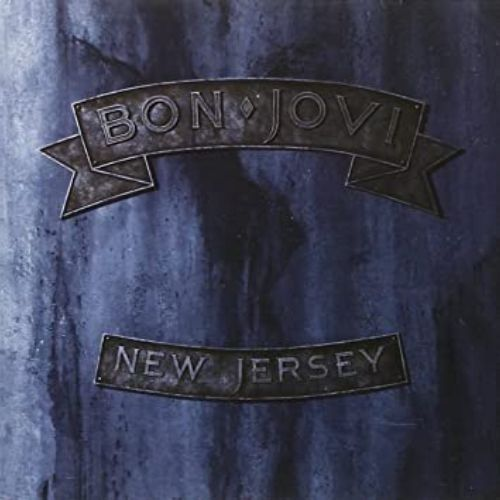 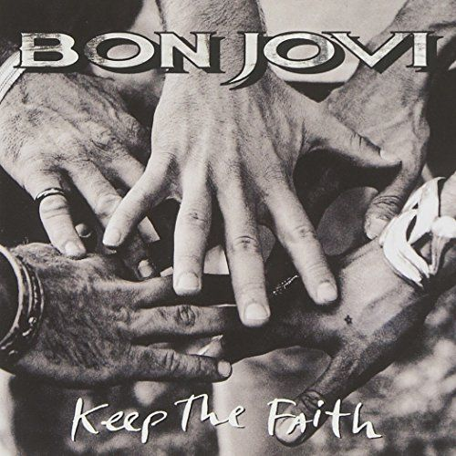 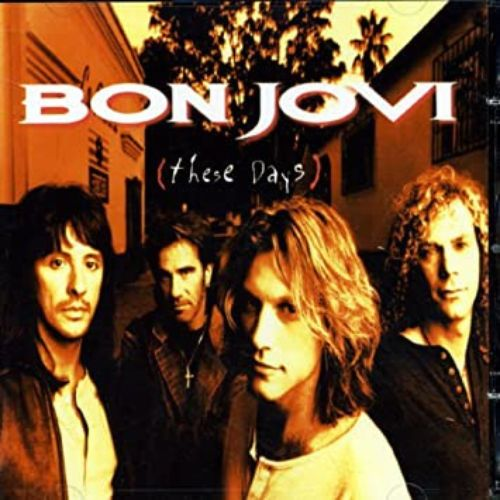 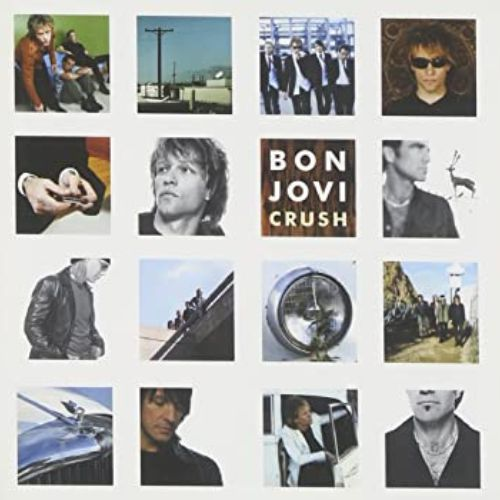 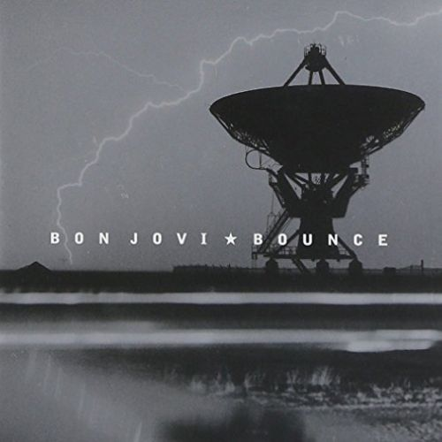
Bon Jovi (1984)
-Runaway
-Roulette
-She Don’t Know Me
-Shot Through the Heart
-Love Lies
-Breakout
-Burning for Love
-Come Back
-Get Ready
7800° Fahrenheit (1985)
-In and Out of Love
-The Price of Love
-Only Lonely
-King of the Mountain
-Silent Night
-Tokyo Road
-The Hardest Part Is the Night
-Always Run to You
-To the Fire
-Secret Dreams
Slippery When Wet (1986)
-Let It Rock
-You Give Love a Bad Name
-Livin’ on a Prayer
-Social Disease
-Wanted Dead or Alive
-Raise Your Hands
-Without Love
-I’d Die for You
-Never Say Goodbye
-Wild in the Streets
New Jersey (1988)
-Lay Your Hands on Me
-Bad Medicine
-Born to Be My Baby
-Living in Sin
-Blood on Blood
-Homebound Train
-Wild Is the Wind
-Ride Cowboy Ride
-Stick to Your Guns
-I’ll Be There for You
-99 in the Shade
-Love for Sale
Keep the Faith (1992)
-I Believe
-Keep the Faith
-I’ll Sleep When I’m Dead
-In These Arms
-Bed of Roses
-If I Was Your Mother
-Dry County
-Woman in Love
-Fear
-I Want You
-Blame It on the Love of Rock & Roll
-Little Bit of Soul
These Days (1995)
-Hey God
-Something for the Pain
-This Ain’t a Love Song
-These Days
-Lie to Me
-Damned
-My Guitar Lies Bleeding in My Arms
-(It’s Hard) Letting You Go
-Hearts Breaking Even
-Something to Believe In
-If That’s What It Takes
-Diamond Ring
These Days (1995)
-It’s My Life
-Say It Isn’t So
-Thank You for Loving Me
-Two Story Town
-Next 100 Years
-Just Older
-Mystery Train
-Save the World
-Captain Crash & The Beauty Queen from Mars
-She’s a Mystery
-I Got the Girl
-One Wild Night
-I Could Make a Living Out of Lovin’ You
-Neurotica
Bounce (2002)
-Undivided
-Everyday
-The Distance
-Joey
-Misunderstood
-All About Lovin’ You
-Hook Me Up
-Right Side of Wrong
-Love Me Back to Life
-You Had Me from Hello
-Bounce
-Open All Night